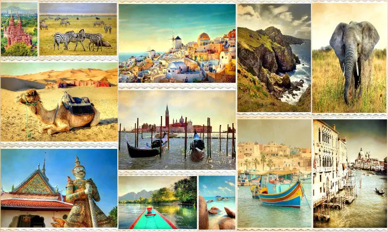

| 1 |
Hospedaje |
Podemos indicarle los mejores hospedajes para quedarse durante sus vacaciones y tambien pueden registrarse en nuestra pagina para darle un lugar para pasar sus vacaciones.
Mostramos buenos hoteles con buenas comodidades para hospedarse, le indicamos que ofrece los hoteles como habitacion, sala, baño, cama, television con cable, refrigerador y más.
Tambien pueden rentar una casa para pasar sus vacaciones que incluye, habitaciones, sala, cocina ya equipada, baño, television con cable. |
|
| 2 |
Transporte |
Para llegar a su destino ofrecemos cualquier transporte para llevarlos a su destino, puede reservar en la pagina para comprar sus boletos de viaje para viajar al lugar que quiera y tambien pueden rentar cualquier vehiculo en la pagina para conducir y visitar los lugares en sus vacaciones. |
|
| 3 |
Comida |
Podemos enceñarles las mejores restaurantes que venden deliciosa comida, disfrute de una buena comida en sus vacaciones, seleccione un restaurante y puede hacer una reserva, o puede pedir para llevar. |
|
| 4 |
Lugares turisticos |
Le recomendamos los mejores lugares para visitar, hay muchos impresionantes lugares que pueden visitar, todos esos lugares brindan una experiencia inigualable y que muchas personas no conocen, conociendo estos lugares podran dirigirse a esos lugares y disfrutar de momentos inigualables. |
 |
| 5 |
Actividades |
Disfrute de hacer actividades nuevas en los lugares durante sus vacaciones, actividades que no halla escuchado, actividades inolvidables como navegar en un bote, dirigirse a los miradores para ver los lugares y camina en las calles de los lugares. |
 |
| 6 |
Excursiones |
Aventurese y explore la naturaleza que hay en los lugares, visite los bosques donde encontrara bella naturaleza, rios, lagos y encuentre bellas plantas, y realize acticidades como escalar montañas y navegar en cayak en los lagos, es una actividad inolvidable lo que pueden hacer. |
 |